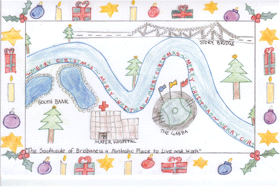

Op edders that is. Anyway, below the fold is an op ed of mine the Age published today ostensibly on Kevin, which was foreshadowed to Troppodillians here. In it I try to argue that all this stuff about the importance of projecting values in politics can be turned to good effect from opposition by working towards various social ends even without the power to determine government policy.
In particular I suggested that campaigning for things to happen and helping them come about before one came into government was not only politically healthy - in that politics and the use of the state should reflect the activity and aspirations of civil society, of people trying to 'do it for themselves'. It would also, I argue, be a way to capture the imagination of an electorate which is, (in this day-and-age rightly) cynical of politicians' motives.
Unfortunately the op ed was edited down so that the second example I gave of a campaign the opposition could run was garbled. If I wasn't the author, I don't think I would have been able to understand what I was saying from the words that survived into the Age. So I reproduce the full text as submitted below the fold.
Doing rather than saying
For those lucky enough to receive it, this year's Christmas Card from Kevin Rudd's looks both backward and forward. The back of the card describes Rudd as the Shadow Minister for Foreign Affairs, Trade and International Security. That was a long time ago. What's that they say about a week in politics?
But the design of the card offers a portent of the future. It's drawn by Georgia Cupples. Should you know her? Probably not. She's a student at St Josephs's Catholic Primary School which (I presume) is in Rudd's electorate. It's a nice drawing of Brisbane with the Gabba and the Story Bridge as the chief landmarks.
Putting Georgia's design on his card is good PR. But it's also a clue to a broader political strategy in a cynical and policy weary electorate at least as hungry for leadership on 'values' leadership as policy. One of Rudd's themes in this struggle for Australian hearts and minds is self-help at the community level and the politician's role as social entrepreneur.
As he observed in an interview earlier this year:
There is a great opportunity for any member of parliament at any level of government throughout the country to become a community entrepreneur. What do I mean by that? Work within market structures or normal local community structures to achieve social outcomes that benefit the community. . . I think we've got on our side of politics, a dual responsibility to work locally as an entrepreneur to achieve community outcomes using the resources available and then to work separately and simultaneously at a policy level to try and achieve outcomes through a change of government and overall national policy.
In describing how he acted as go-between between various parties to rescue 800 jobs by saving a local abattoir from closure, Rudd illustrates the role of the politician as social entrepreneur. That's not new, though within the cynical culture of party politics today, the experience clearly came as something of a revelation for Rudd.
He comments on how the old-timers in his branch used to greet newcomers to the neighbourhood with a box of groceries on the back step compliments of the local ALP branch. It was good PR and good politics. Just like Rudd's Christmas card.
This approach offers a powerful force of renewal for politics. Rudd's local social entrepreneurship has presumably been part of his remarkable success in extending his winning margin in each election he's fought.
But if it can be used to extend his margin of incumbency, it's even more important from the perspective of an opposition seeking office. Doing rather than saying is a much better way to demonstrate what one stands for and to capture the attention of the media and the electorate in a cynical age.
Self-help politics can be taken further beyond local social entrepreneurialism and into national policy itself. Here's an example. With ballooning trade and payments deficits it would be prudent for Australians to save more. But people's hip pocket nerves being what they are, politicians find it easier to talk about the need for more saving than they do restraining consumption.
Enter default superannuation.
Next year if they do nothing, each New Zealander will have an additional 4 percent of their wages paid into their super accounts. They'll be able to opt-out to complete a form electing not to save the extra 4 percent. But the research suggests that many of those who are too apathetic to save enough will be too apathetic to opt-out thus increasing savings perhaps substantially and certainly relatively painlessly.
I've argued along with others, including the members of a Federal parliamentary committee, that Australia should follow suit – indeed we used to be policy innovators like New Zealand is now. Labor should embrace default super as a policy. But if it did it would be a one day wonder with a brief story in the middle of paper.
But - and here's the point - who says governments have to adopt the policy for it to be implemented? Rudd could proselytise the policy's virtues and campaign for businesses to adopt it as an expression of their own corporate social responsibility as some firms have done in the US. If only a few did so, Rudd would be showing us, not telling us. He'd be doing, not saying. And with each firm that signed up, he'd ask why others weren't signing on. Before long it might even interest the pundits as a symbol of a political struggle. And the Opposition would be effecting worthwhile change before it took office.
I've also argued that, while we debate how much to deregulate labour law we might pay some attention to a huge labour market failure: You usually don't know what it's like to work for a firm before you start working there! Yes, yes I know it's not a mainstream talking point. But imagine a market for houses or cars where you knew almost nothing about how they performed until you bought them and it gives you a whole new insight into how inefficient our labour market is now.
We can improve it. Right now most large firms circulate questionnaires to their employees, seeking information on a range of factors governing work satisfaction. The best managed employers have an interest in standardising this information to make it comparable across firms and publishing the results. Why? To attract the best employees. So the Opposition might be able to encourage a few firms to take the plunge. If so, how much more influential might it be in office? A good question for Labor to pose in an election.
These are just two examples, but Kevin Rudd's penchant for that old Christian standard of doing well by doing good could be a formidable political weapon.
And even if he loses, he'll be true to his pledge in his maiden speech:
I do not know whether I will be in this place for a short or a long time [but] I have no intention of being here for the sake of being here. Together with my colleagues it is my intention to make a difference.
I think that is eminently sensible - you should write more op-eds KP!
Interesting. Given his opponent's position, it's reasonable to mention a fundamental difference between Rudd and Howard.
As I understand it, Howard lived with his mother at home until the age of 35 or so, and from the accounts I've read has had his mind on politics for most of his maturing life. He could be described as a politician's politician.
Rudd comes from a very different background. He's shown himself to be more entrepreneurial than Howard; his wife, significantly so. That's a very different space to have surrounding your productive life.
Entrepreneurs, big or small and in whichever field, prosper or at least survive by doing. Wouldn't want to be too tough on academics here, or educators, the corporate person, or politicians, nor generalise too much - but there's an entirely different mindset needed to get up each morning and walk into a place (for your productivity) created for you, than one you create yourself.
As much as there is knowledge and wisdom in non-entrepreneurial pursuits, including the advice given to entrepreneurs in the latter's field, there is absolutely no accounting for doing it.
It's very reasonable to assume the power of 'doing' will be evident in Rudd-2007, distinct from Howard-2007. How much it's compromised by political necessity will also be of interest - though, again, Rudd's 'political necessities' will be different again, altered by the different prism through which he views his day.
It does make for an interesting year.
Actually, for good academics, it's not that different. Nobody allocates research projects - you have to match the ideas with the funding and the people.
Howard, to be fair to him, I think was 32 when he left home.
Nice piece, Nicholas. And St Joseph's is pretty close to the Gabba (and in Rudd's electorate).
Mark [and Nicholas] , I'm rather glad my comment is not subject to the percentage [%] qualifying criteria. There are variances all through it. Some quick ones embracing your comment: there are similarities in abundance through pursuits in all fields, and in effect we all wake up to a day we are responsible for creating. 'Mindsets' are also often similar, in ways and in parts.
However, there are fundamental differences between entrepreneurs and academics, even if only by way of a different weighting given those similarities, in their minds. My experience of successful entrepreneurs is the differences are so significant as to find no use in 'talking' about it, for those fundamental reasons.
How entrepreneurially affected Rudd is is yet to be seen.
political parties should always be working to implement their policies to improve Australia, whether in power or not
the 'excuse' of being out of government to do nothing but bitch is embraced by both sides as a way of avoiding work and responsibility
let's hope Kevin, and others including the minor parties, get into this and show Howard up for the politicans' politician that he is
I think the difference between talking and doing is also evident in the Best Blogs initiative. There are many things that need a fair bit of talking through before you embark on them. But with BBO6 it was odd to have so many people suggesting it wasn't worth it on fairly 'in principle' grounds when I'm sure it will be a useful exercise just doing it and then we can actually stand back and have a look at what has been achieved. It's not a huge amount of work, and then we get to see the results. Then we can decide what to do (including possibly nothing) next time. That's an entrepreneurial rather than an academic spirit.
But this is not to disagree with Mark B - because guess who's doing it - (mainly) Ken Parish - an academic with a bit of moral support from me.
Speaking for myself, given the vast increase in the number of things that can be done with minimal investment, I'm a great 'do rather than say' person. When Peach Home Loans' gets rung up by a new funder, or service provider or whatever, the person calling usually tries to book an appointment. I tell them that I don't do appointments until we've done some business together. In a world of flakes employing flakes as business development managers, it keeps you out of harm's way to only have appointments with people who you've already done a bit of business with.
Sounds like the very cautious philosophy of most of the drug dealers I know, Nick.
Same strategy, different reasons.
My understanding of an entrepreneur is that of a middle-man who seeing an opportunity, and having the capital to back it goes ahead with it, personally undertaking whatever risk may be involved. This could also be true for academics, who see an area in need of research, supply the resources to undertake that research, and risk the only irreplaceable thing any of us have (ie, time) in carrying it out.
What is really academic are our commentaries. Doing is nothing is difficult if not physically impossible. Even when you're dead for a while at least your'e rotting. Spouting bullshit is probably the only really effective way to do nothing and even then you're bullshitting. . . . . Talking is doing something to, but then eventually you have to get up and 'act', I guess that's why we have bodies.
Entrepreneurial stuff always seems like a crock to me. You either have to have money well established or take out a loan, one that you'll only be able to afford to pay back if your ideas succeed but if your ideas go belly up - you can never recover.
The only way I see out of it is by cheating the system and manipulating people. Maybe its just the cynic in me but that's the way I see it and that's how the business world and politicians both seem to operate.
I think your suggestion that Rudd is an entrepreneur is wrong and offensive to those people who have actually created sustainable businesses.
John Howard isn't elected on the work of his wife, so why should we elect Rudd based on the fact that his wife successfully exploits a government contract?
Kevin Rudd is a socialist and would send genuine Australian entrepreneurs overseas. I hope he is not elected.
Nicholas, I too loved your piece.
On your two policy sugestions, I strongly endorse the one on labour market failure but may I disagree with you about superannuation?
Super has now become a rich person's tax haven. It offers little for low income earners. Nor does it really do that much for national saving if the efect is to make people switch out of one form of saving to another and further erode the tx base. I would prefer to see any default super to be tightly means tested. That might work for both equity and saving.
Fred - you don't disagree with me because I wasn't talking about the outrageous tax lurks for super (about which I agree with you!). I was simply talking about getting people's saving up particularly those who don't think about it. They're separate issues - or seem to me so.
Nicholas, in IR - the try before you buy approach (on both sides) is happening already - via use of locum staff. I expect that momentum will increase. Also the young (those under 30) seem a great deal less interested in 'doing their time': they will resign within 2 years if they don't like a workplace and move on. They say now that the average Londoner (which I admit is not the average Aussie) will have 19 different work roles in their work life - so change is normal is it not.
On super - if people are so disinterested in life that they won't chose one way or the other - i.e. they go 'default': heaven help those people! That sounds like hell to me.
Good article by the way.
I tend to think though that 'suasion' is better led by community people but accept that politicians can do a great deal on that front. Put it this way - would I rather have a lecture from Bono or from John Howard?
obviously, yes, I meant to praise N Gruen. oops.
Corin, the way The Age edited the piece it made it look like I was arguing for 'try before you buy' with jobs. I wasn't. The problem with try before you buy is that people usually have a job - so it's hard for them to try another - though it can sometimes be done in holidays or spare time (though not if there's a good 'grapevine' between existing and prospective employer. So I don't see that as a great opportunity - and in any event I can't see the market failure.
There is a market failure in not knowing whether a place is a good place to work or not from the outside, and I'm not sure how much increased turnover and the preparedness to move on improves that - except that you get a larger number of blind experiments. It may in the Darwinian sense that high turnover costs firms so firms that give their employees an unsatisfying time will grow less fast, but that takes a fair while to work.
On super, the literature shows that this kind of non-planning is not just practiced by the hopeless. We all procrastinate often quite badly. George Akerlof has a journal article in which he talks about procrastinating in returning some luggage to Jo Stigliz who had come to stay with him. He put it off each day until a year had passed and then returned it in person as he left India (I think it was) and returned to the states. Setting defaults thoughtfully can be looked at as a simple attempt to reduce transactions costs and provide some rough expertise to the community at minimum cost.
I have never sat down and worked out how much I'll need in retirement. It's actually very hard to do and you get lost in the 'what ifs' pretty quickly. I just save excess income which has worked out fine (here's hoping!)